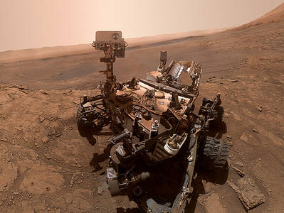
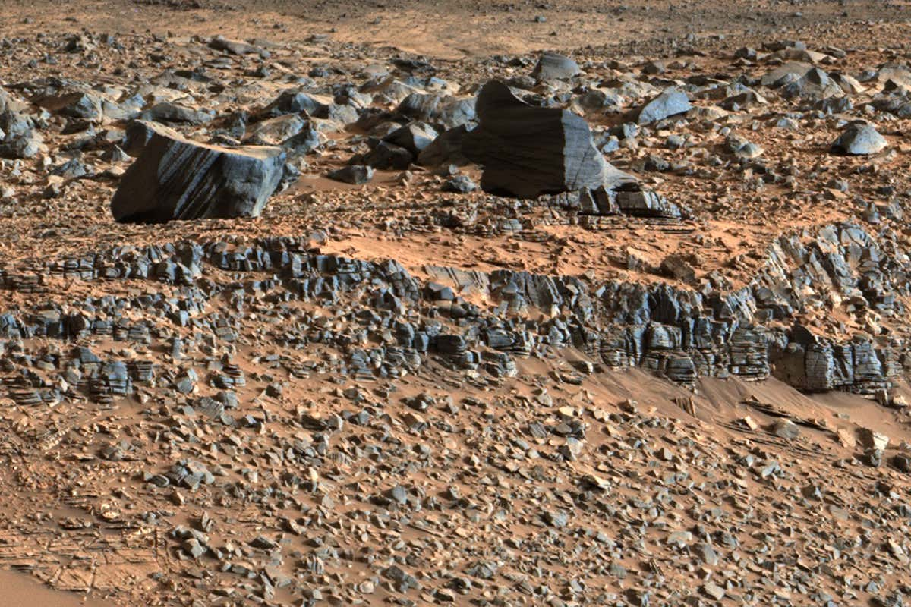

The Mars Science Laboratory and its rover centerpiece, Curiosity, is the most ambitious Mars mission yet flown by NASA. The rover landed on Mars in 2012 with a primary mission to find out if Mars is, or was, suitable for life. Another objective is to learn more about the Red Planet's environment. In March 2018, it celebrated 2,000 sols (Mars days) on the planet, making its way from Gale Crater to Aeolis Mons (colloquially called Mount Sharp), where it has looked at geological information embedded in the mountain's layers. Along the way, it also has found extensive evidence of past water and geological change.
 